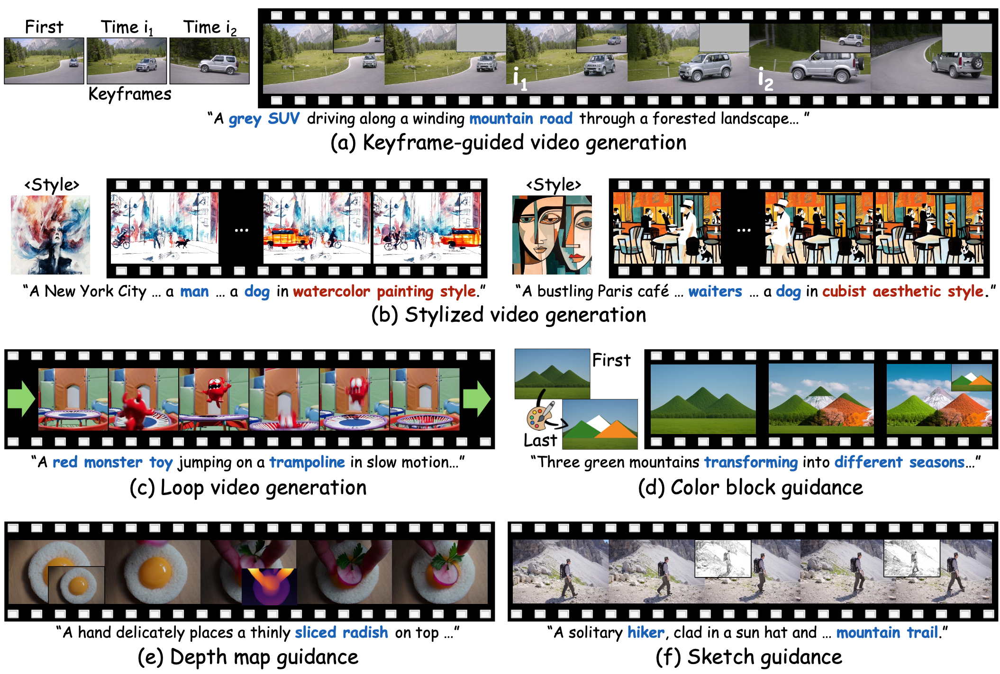
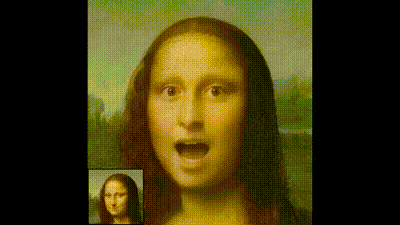
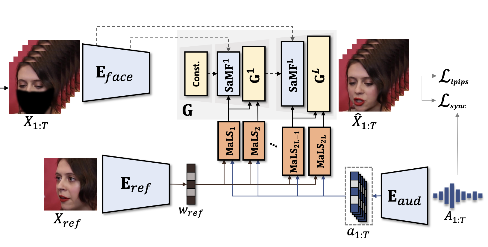
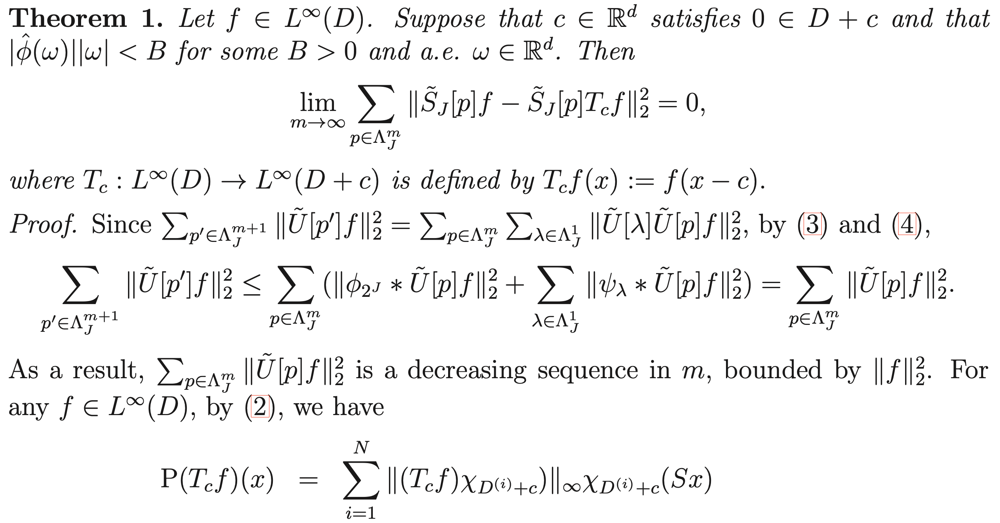

|
Taekyung Ki I am a 1st-year Ph.D. student at KAIST MLAI advised by Prof. Sung Ju Hwang. From March 2022 to March 2025, I conducted research on video generation as part of my mandatory military service in South Korea. I began working in deep learning in February 2021. I received my M.S. in Mathematics in February 2021 and my B.S. in Mathematics in February 2019. I am interested in the following research topics:
I am open to research collaborations globally! If the topics above align with your research, feel free to contact me an e-mail. |
{kind=link}
Highlights
|

|
Self-Refining Video Sampling
Sangwon Jang*, Taekyung Ki*, Jaehyeong Jo*, Saining Xie, Jaehong Yoon†, Sung Ju Hwang† arXiv 2026 Project Page / arXiv / Code / Hugging Face We propose a self-refining video sampling method that achieves better motion-enhanced video generation without additional training or external verifiers. |
|
|
Avatar Forcing: Real-Time Interactive Head Avatar Generation for Natural Conversation
Taekyung Ki*, Sangwon Jang*, Jaehyeong Jo, Jaehong Yoon, Sung Ju Hwang† Conference on Computer Vision and Pattern Recognition (CVPR), 2026 Project Page / arXiv / Code / Hugging Face We introduce a user-interactive head generation model based on motion latent diffusion forcing and a direct preference optimization method for interactive motion. |
|

|
Frame Guidance: Training-Free Guidance for Frame-Level Control in Video Diffusion Models
Sangwon Jang*, Taekyung Ki*, Jaehyeong Jo, Jaehong Yoon, Soo Ye Kim, Zhe Lin, Sung Ju Hwang† International Conference on Learning Representations (ICLR), 2026 Project Page / arXiv / Code / Hugging Face Frame Guidance is a training-free guidance method for large-scale VDMs, which enables to generate frame-level controllable videos only using a single GPU. |
|

|
FLOAT: Generative Motion Latent Flow Matching for Audio-driven Talking Portrait
Taekyung Ki, Dongchan Min, Gyeongsu Chae International Conference on Computer Vision (ICCV), 2025 Audio-Visual Generation & Learning Workshop at ICCV (AVGen@ICCV), 2025 Project Page / arXiv / Code / Hugging Face FLOAT is a motion latent flow matching model for audio-driven talking portrait generation and editing using its learned orthonormal motion basis. |

|
Learning to Generate Conditional Tri-plane for 3D-aware Expression Controllable Portrait Animation
Taekyung Ki, Dongchan Min, Gyeongsu Chae European Conference on Computer Vision (ECCV), 2024 Project Page / Paper / arXiv / Supp We propose a contrastive pre-training framework for appearance-free facial expression hidden in 3DMM and 3D-aware, expression-controllable portrait animation model. |
|

|
StyleLipSync: Style-based Personalized Lip-sync Video Generation
Taekyung Ki*, Dongchan Min* International Conference on Computer Vision (ICCV), 2023 Project Page / Paper / arXiv / Code / Supp StyleLipSync can generate person-agnostic audio-lip synchronized videos by leveraging the strong facial prior of style-based generator. |
|

|
Deep Scattering Network with Max-pooling
Taekyung Ki, Youngmi Hur† IEEE Data Compression Conference (DCC), 2021 Paper / Code We mathematically prove that the pooling operator is a crucial component for translation-invariant feature extraction in Scattering Network. |
|
|
Motion Latent Flow Matching for Real-time Audio-driven Talking Portrait
Pika Labs Host: Chenlin Meng (CTO) Aug. 2025 |
Awards and Honors
|
Academic Services
|
|
Last updated in February 2026. This page is based on Jon Barron's website template. |